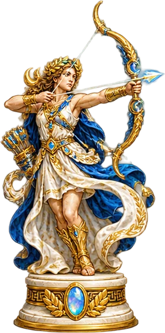
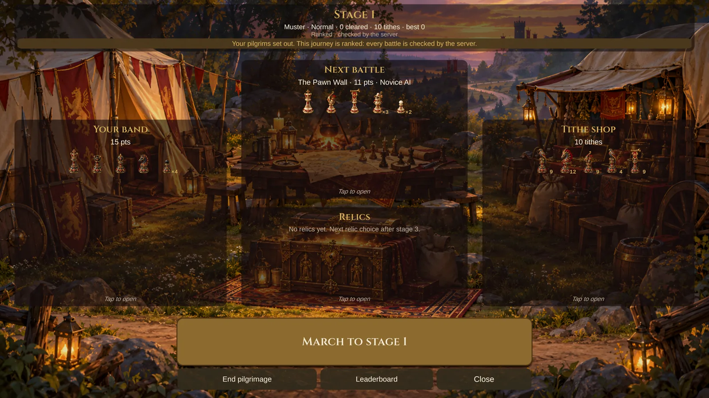
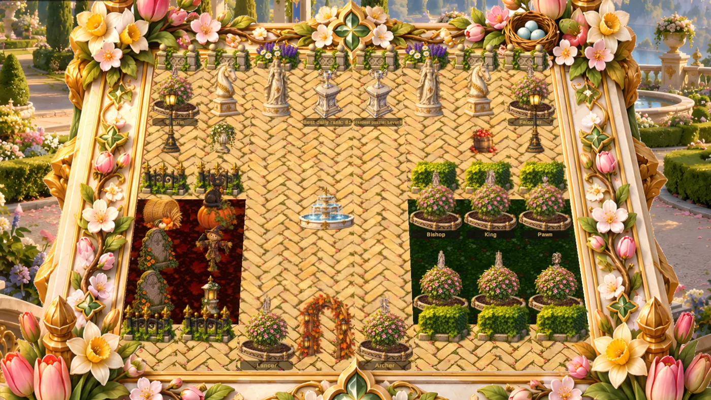
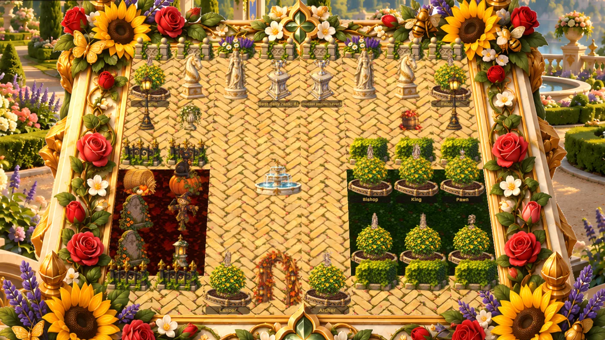
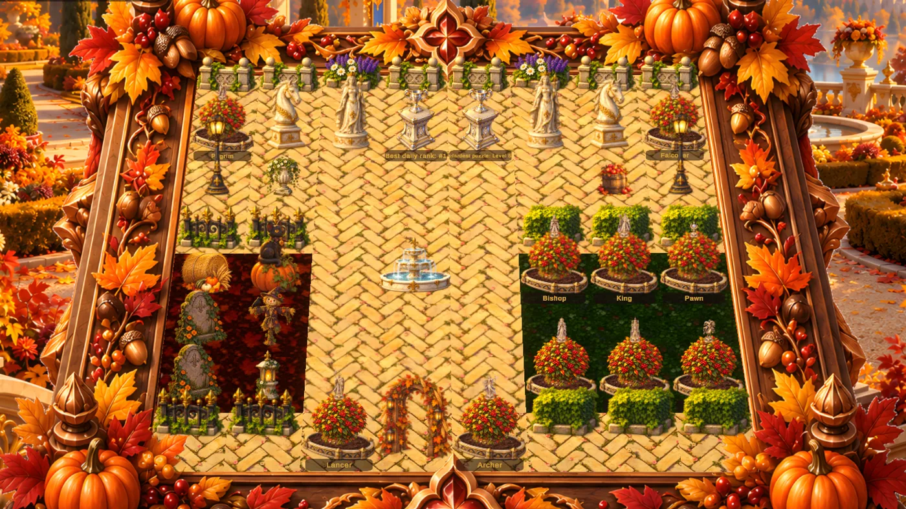
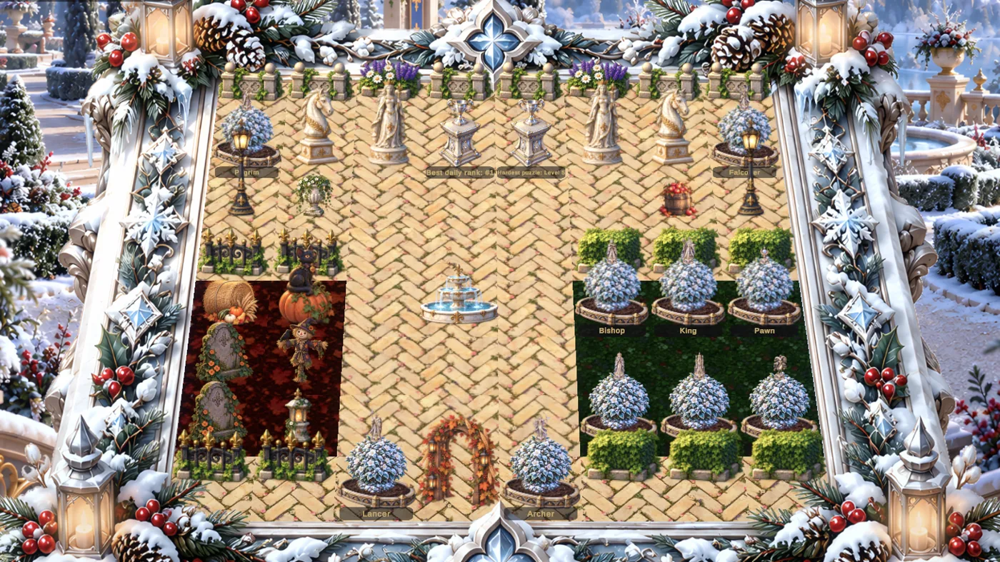
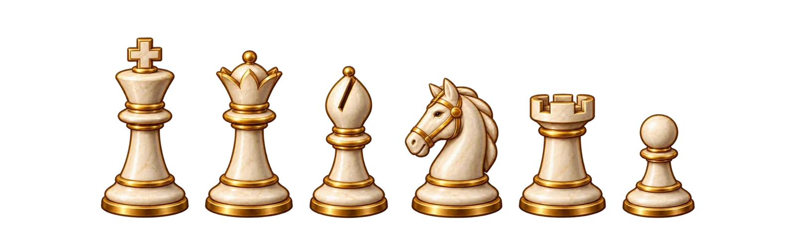
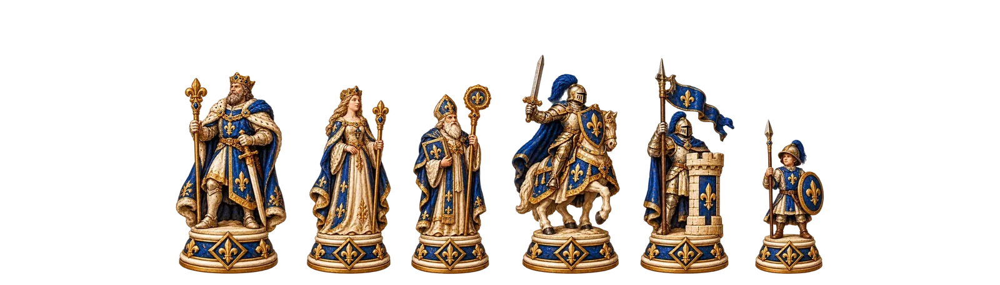
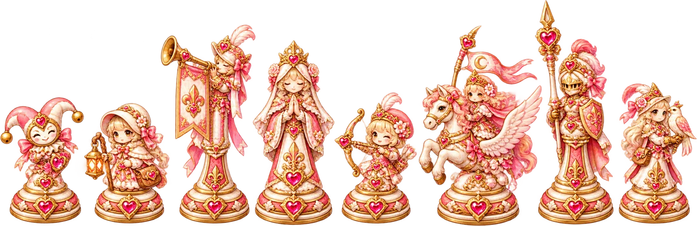
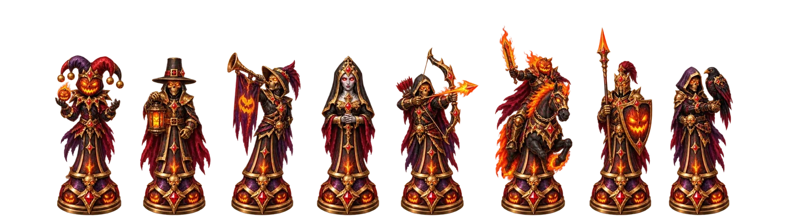

Fragman
Ekrana geldiğinde sessiz oynamaya başlar. Sesi açmak için hoparlöre dokun.
Sarayla tanış
Başka hiçbir satranç takımında bulamayacağın sekiz taş; her birinin kendi hamlesi ve oyunda kısa bir dersi var. Nasıl hareket ettiğini görmek için bir taş seç.

Okçu
- hamle ya da alma
- yalnızca hamle
- yalnızca alma
- ok atar, yerinde kalır
- düşman
- sıçradıktan sonra kondu
Kutlu Yol
Sonu olmayan, roguelite tarzı bir yolculuk. Küçük bir dervişler kafilesini savaştan savaşa, durmadan büyüyen ve gittikçe zekileşen ordulara karşı götür. Kaybettiğin taş sonsuza dek kaybolur; izin verdiğin her alma, yolun geri kalanında önemlidir.

- 1
- 2
- 3
- 4
- 5
- 6
- 7
- 8
- 9
- 10
- 11
- 12
- 13
- 14
- 15
- ilk üç aşama ücretsiz
- emanet seçimi
- boss
- ve ordun dayandıkça devam
Savaş
Aşamanın ordusunu en fazla 50 hamlede yen. Beraberlik yok: hamleler biterse tahtada daha çok puanı olan taraf kazanır, eşitlikte ise düşman kazanır.
Kamp kur
Galibiyetler öşür kazandırır. Öşrünü yeni erlere harca (beşi satışta, biri yarı fiyatına), sıradaki düşmanın tam olarak nerede durduğunu görmek için bir keşifçiye ödeme yap ve yola çıkmadan önce ordunu yeniden diz.
Emanet seç
Her üç aşamada bir, üç emanetten birini seç. Her biri yolculuğun geri kalanında kuralları senin lehine büker.
Sekiz emanet
İyi seç: etkileri birikir ve hiçbir yolculuk onları aynı sırayla sunmaz.
Kimlerle karşılaşacaksın
Vadinin Okçuları, Soytarı Kumpanyası ve Manastır Muhafızları gibi temalı bölüklerle. Her beşinci aşamada Issız Saray ya da Kül Şahın Muhafızları gibi bir boss sarayı daha büyük bir orduyla gelir.
Kendi tarzınla
Bir şah, bir fil, bir at, bir kale ve dört piyonla başla. Oyundaki tüm taşlarla Seferberlik sürümünü ya da bilinen altı taşla Klasik sürümü Kolay, Normal veya Zor seviyede oyna.
Sıralamada yüksel
Her sürümün ve zorluğun, geçilen aşama sayısına göre sıralanan kendi tablosu var. Sunucu dereceli yolculukları savaş savaş kontrol eder; her skor gerçektir.
Oyun modları
Klasik satranç oyna ya da yeni taşları işin içine kat. Saat, sen istemedikçe kapalıdır ve her oyuna “Tepenin Şahı” gibi özel kurallar eklenebilir.
Kendi temponda
Klasik
Bildiğin satranç; bilgisayara karşı ya da aynı cihazda bir arkadaşınla.
Seferberlik
Puan bütçesiyle kendi ordunu kur ve savaşa götür.
Seçim
Sen ve rakibin ortak bir havuzdan sırayla taş seçersiniz.
Piyon Fırtınası
Her iki tarafa bir şah ve bir piyon duvarı. Kısa, keskin ve şaşırtıcı derecede derin.
Meydan okumalar
Kutlu Yol
Aşama aşama ilerleyen, emanetlerle ve her kampta yeniden kurduğun bir orduyla sonsuz bir roguelite yolculuğu.
Günün bulmacası
Her gün yeni bir bulmaca. Çözdükçe kendi tasarladığın bir bahçe büyür.
Haftalık Meydan Okuma
Herkes aynı orduyla karşılaşır. Haftanın tablosunda zirveye çıkmak için en az hamleyle kazan.
Dersler
Her taş, mat, beraberlik, rok ve daha fazlası hakkında kısa dersler.
Çevrimiçi
Dereceli
Köylü’den Hükümdar’a yüksel. Sunucu her dereceli oyunu kontrol eder, böylece sıralama adil kalır.
Arkadaşlar
Arkadaşlarınla oyna, ifade gönder ve aranızdaki maç geçmişini takip et.
Bahçe ziyaretleri
Diğer oyuncuların bahçelerinde dolaş ve onlara bir çiçek bırak.
Her yerde tek hesap
Giriş yaptığında telefon, tablet ve PC aynı ilerlemeyi paylaşır.
Mevsimler boyunca bir bahçe
Çözdüğün her günlük bulmaca bahçeni büyütür. Yollar, tarhlar ve süsler yerleştir; bahçenin yıl boyunca değişmesini izle, bu arada mevsimlik masalar ve süsler kazan.




Bir oyuncunun bahçesi, yıl boyunca. Tarhların, heykellerin ve kupaların koyduğun yerde kalır; mevsimler etraflarında değişir.
Zevkine göre
Masanı, arka planını, müziğini ve taş takımını seç. Armalar, sancaklar ve mevsimlik masalar kazan; en sevdiğin taşları ustalaştıkça bronzdan platine kadar yaldızla.




Koleksiyondan yalnızca birkaç örnek. Oyunda seni daha fazla takım, masa ve arka plan bekliyor.
Kaydet, izle, paylaş
Oyunu gerçekten senin yapan küçük ayrıntılar.
Orduların
Seferberlik için ordular kur ve sevdiklerini kaydet. Bir orduyu, arkadaşının doğrudan yapıştırabileceği bir kod olarak paylaş.
Tekrar izlemeler
Son oyunlarını yeniden izle. Son 5, 10 veya 25 oyunu sakla.
Sonra bitir
Bilgisayara karşı ya da aynı cihazda oynadığın bir oyunu kaydet ve istediğin zaman devam et. Çevrimiçi oyunlarda kaydetmeyi önerebilirsin; ikinizin de bitirmek için 30 günü olur.
Anı paylaş
Oyundan sonra sonucun bir görselini ya da telefonda oyunun kısa bir video klibini paylaş.
İzleme modu
İki bilgisayarı birbirine karşı oynat, müzik eşliğinde oyun oyunu izlesin. Sakin bir akşam için iyi bir arkadaş.
Baştan sona huzurlu
- Asla reklam yok. Oyun ücretsiz. İsteğe bağlı Court Pass, tüm Kutlu Yol’u, bahçe süslemeyi ve kazandığın tüm kozmetikleri açan tek seferlik bir satın alımdır.
- Sen istemedikçe saat yok, ya da 1 dakikalık bullet’tan 30 dakikalık klasiğe kadar her tempo.
- Herhangi bir taşa basılı tut, tam olarak nasıl hareket ettiğini gör.
- Yakın plan ya da yukarıdan tahta, koordinatlar, geçerli hamleler ve hamle izleri isteğe göre.
- Her cihazda rahat: ayarlanabilir yazı boyutu, iki parmakla yakınlaştırma ve eski telefonlar ile daha uzun pil ömrü için hafif efektler.
- Türkçe dahil on iki dil: İngilizce, İspanyolca, Portekizce, Fransızca, Almanca, İtalyanca, Lehçe, Rusça, Japonca, Korece ve Çince.